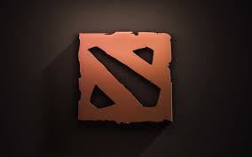

Dota 2 — компьютерная многопользовательская командная игра в жанре multiplayer online battle arena, разработанная корпорацией Valve. Игра является продолжением DotA — пользовательской карты-модификации для игры Warcraft III: Reign of Chaos и дополнения к ней Warcraft III: The Frozen Throne. Игра изображает сражение на карте особого вида; в каждом матче участвуют две команды по пять игроков, управляющих «героями» — персонажами с различными наборами способностей. Для победы в матче команда должна уничтожить особый объект-«крепость», принадлежащий вражеской стороне, и защитить от уничтожения собственную «крепость». Dota 2 работает по модели free-to-play с элементами микроплатежей.
Разработка игры началась в 2009 году, когда компания Valve приняла на работу основного разработчика DotA — IceFrog, а летом 2010 года подала заявку на регистрацию этой торговой марки[5][6]. 13 октября 2010 года на игровом портале Game Informer игра была анонсирована к выходу в 2011 году[7]. 15 августа 2011 года в официальном блоге был опубликован трейлер к игре[8]. Dota 2 вышла в июле 2013 года после того, как два года находилась в стадии бета-тестирования[9][10].
Dota 2 представляет собой многопользовательскую игру в жанре MOBA («многопользовательская онлайновая боевая арена»), в которой сражаются две команды по пять игроков. В игре участвуют две команды по пять человек. Одна команда играет за светлую сторону (англ. The Radiant), другая — за тёмную (англ. The Dire). Конечная цель каждого матча — уничтожить вражескую «крепость» (англ. Ancient), особый объект, принадлежащий противнику, и защитить собственную крепость[18]. Подобно Defense of the Ancients, Dota 2 использует управление с помощью мыши и клавиатуры, схожее с управлением в стратегиях в реальном времени, и вид с расстояния, имитирующий изометрическую проекцию[18][19] Каждый из десяти участников матча управляет одним персонажем, который называется героем; игроки выбирают героев из обширного списка, и каждый герой имеет свою узнаваемую внешность, силы и слабости[18][20]. В ходе матча игрок выполняет определённую роль, как, например, «керри» (англ. Carry) или «саппорт» (англ. Support), и герои могут по своим характеристикам лучше подходить для той или иной роли[18][21]. В течение матча герой может получать очки опыта, зарабатывать золото, покупать и собирать предметы, которые усиливают его или дают дополнительные способности. «Керри» в начале матча относительно слабы, но по мере набора очков опыта становятся сильнее и получают доступ к способностям, позволяющим им легко побеждать врагов и в конечном счете добиться победы для всей команды. Способности «саппортов» позволяют оказывать помощь товарищам — например, восстанавливать потерянные очки здоровья[21][22]. Если очки здоровья героя снижаются до нуля — например, его одолевает в бою вражеский герой — герой в течение некоторого короткого времени считается «погибшим»; по окончании этого времени герой вновь появляется рядом с крепостью, и управляющий им игрок может возобновить игру. Уничтожение вражеского героя приносит его победителю большое количество очков опыта[23]. Каждый матч проходит на квадратной карте специального вида, где крепости обеих команд находятся в противоположных углах, а игроки рассредотачиваются по соединяющим эти крепости путям — «линиям» (англ. Lane)[18]. Помимо самих игроков, в игре принимают управляемые компьютером существа-«крипы» (англ. Creeps) и неподвижные строения-«башни» (англ. Towers), свои с каждой стороны; они также участвуют в сражении, атакуя вражеских героев, крипов и башни противника и тем самым помогая «своей» команде[23][24]. Туман войны, покрывающий большую часть карты, не позволяет игрокам следить за передвижениями противника[21].
